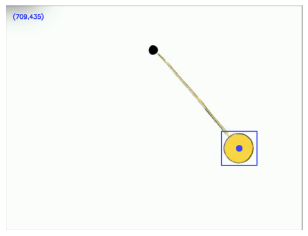

Code
import cv2
from IPython.display import display, clear_output
import numpy as np
import tracking_tools as tt
import matplotlib.pyplot as pltIn this jupyter notebook we will see how to use OpenCV to track an object in a video. We’ll first select the object (Region Of Interest) then track it through the frame and finally we’ ll plot the evolution of the barycenter of the object with regard to the frame number.
We’ll need
The tracker is the CSRT tracker from OpenCV based on (Lukezic et al. 2017) that we initialised based of the bounding box surrounding delimiting the ROI.
We now loop over the frame to perform the actual tracking and store the positino of the barycenter of the ROI for each frame.
while True:
frame_num +=1
flag_read, frame = cap.read()
if not flag_read:
break
flag_track, bbox = tracker.update(frame)
if flag_track:
x, y, w, h = [int(v) for v in bbox]
center_x = x + w // 2
center_y = y + h // 2
positions.append([frame_num, center_x, center_y])
cv2.rectangle(frame, (x, y), (x + w, y + h), (245, 70, 58), 2)
cv2.circle(frame, (center_x, center_y), int(0.1*min(h,w)), (245, 70, 58), -1)
cv2.putText(frame, f"({center_x},{center_y})", (20, 40),
cv2.FONT_HERSHEY_SIMPLEX, 0.6, (245, 70, 58), 2)
else:
cv2.putText(frame, "Lost", (20, 40),
cv2.FONT_HERSHEY_SIMPLEX, 0.6, (247, 59, 218), 2)
rgb = cv2.cvtColor(frame, cv2.COLOR_BGR2RGB)
clear_output(wait=True)
plt.imshow(rgb)
plt.axis('off')
plt.show()
cap.release()
import numpy as np
import plotly.graph_objects as go
import plotly.io as pio
pio.renderers.default = "notebook_connected"
positions = np.array(positions)
fig = go.Figure()
fig.add_trace(go.Scatter(
x=positions[:,0],
y=positions[:,1],
mode='lines',
name='X',
line=dict(color='rgb(58,70,245)')
))
fig.add_trace(go.Scatter(
x=positions[:,0],
y=positions[:,2],
mode='lines',
name='Y',
line=dict(color='rgb(23,15,48)')
))
fig.update_layout(
title="Position over time",
plot_bgcolor='rgba(0,0,0,0)', # Remove background color
xaxis_title="Frame number",
yaxis_title="Position (pixels)",
legend=dict(x=0, y=1),
width=900,
height=500,
)
fig.show()